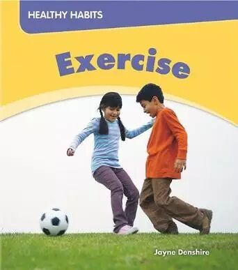
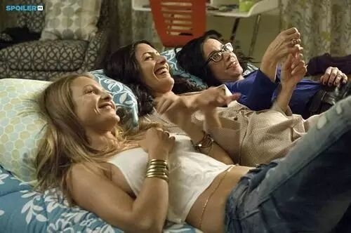
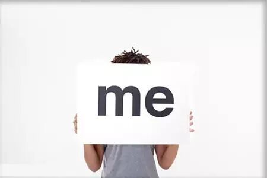
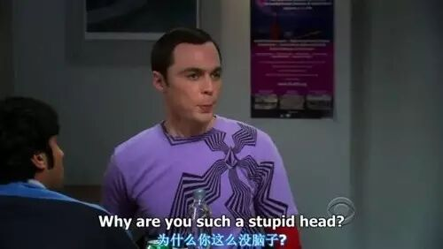

Time: 19:30-21:30, Friday,April 22.
Venue: Room B208, New Main Building, Beihang University.
Toastmaster: Qiqi
Table topic master: Gatsby

Whether you are a boy or a girl, have you ever dreamed of owning a sexy body by exercising? If so ,I am sure you are willing to exercise. Actually, exercising is beneficial in all kinds of aspects, not only helping us become more attractive, but also bringing us a healthy lifestyle. Have you ever tried to exercise at once? What kind of exercising is your favorite? How often do you exercise? What’s the biggest benefit exercising has brought to you?······· So many questions about exercising. We are going to talk about exercising this week. Why not come and join us and share your own story about exercising?
Prepared Speech
1.Tea(CC1)
Three girlfriends

This week our Tea is giving herfirst speech, and she will tell you three special girls in her postgraduate life.Youwant to know more about our new member? And her girlfriends?You shouldn’t miss it.
2.Cicily(CC1)
Here comes Cicily!

This week, our “old” friend Cicily is giving her first speech, and she will officially introduce herself to all of you. Want to know what the most important three things in her life? Want to see her personal selfies never shown before? Want to make friends with this truly fun person? Come and listen to me!
3.Sarah(CC3)
How to promote your EQ?

Have you ever met dilemmas of being joked and felt it hard to discern whether its a real joke or a sarcasm, acting like Sheldon in TV series of BigBang Theory ? Then there is a good news for you, Sarah is gonna bring you a bowl of Chicken Soup for the Soul. Let's hear what she is gonna say for promoting one's EQ.
What is Toastmasters?
Toastmasters International (TI) is a nonprofit educational organization that operates clubs worldwide for thepurpose of helping members improve their communication, public speaking, andleadership skills.
You can find us by the following map of Beihang University.

https://mp.weixin.qq.com/s/AjjaSB0GMo44DVsDKqUGJw
本页为抢救式本地归档，图文已永久保存。